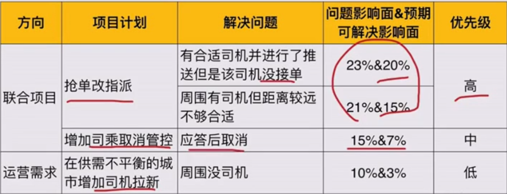

四个方法：用户反馈收集、系统监控、效果回归、阶段性调研
发现问题的几个途径
用户反馈收集
系统监控
效果回归
阶段性调研
用户反馈收集
案例
用户反馈早高峰打不到车——（看似合理）——重视并分析——
连续5天订单只有1天成功订单——系统并发太高，丢单
目的地名为金碧辉煌——不合理黄反，被过滤
处理用户反馈的基本流程
收集用户问题
用户反馈分析
整理撰写需求
落实产品改进
手机用户问题的常见渠道
自有渠道
产品各个端上的用户反馈入口
客服收集到的问题
外部渠道
各类应用商店评论
微博、贴吧等媒体渠道的评论
用户反馈分析的方法
数据处理：清洗、标注
问题整理：分析、汇总
用户反馈分析：数据处理
浏览了解数据内容
删除无效数据
对反馈问题进行标注，理解背后反应的问题
用户反馈分析：常见问题分类
不是问题
常见为用户的抱怨，在产品当前的服务范畴之外
已知问题
常见为优先级不高、或已在项目计划中还未上线的老问题
未知问题
常见为新版本问题或之前没发现的老问题
如果无法直接判断原因，需要抽取当时具体session（自有渠道）、或进行用户回访（外部渠道）定位具体问题
用户反馈分析：问题整理
已知问题
按照原有计划推进
未知问题
进行分析定位合并，进行下一步产品分析
用户反馈分析的局限性
收集到的问题比较随机，很难反应产品现状的全局。虽然可能代表一类问题，但是问题的影响面和优先级比较难判断
小结
每一个反馈背后都是一个真实用户的情感表达，以敬畏心态深入分析每一个问题
搭建监控系统的基本方法
为什么要做监控
监控是一种针对相对稳定的产品，通过对数字性指标的收集和观察，自动、实时发现问题的有效手段
监控体系的搭建
定义待监控的指标
告诉机器要观察哪些指标
定义报警规则
告诉机器什么时候&如何通知我们
定义待监控指标： 产品框架拆解
案例：百度搜索
白盒：用户输入搜索词、点击翻页等行为
黑盒：识别用户需求、搜索排序展现等
案例：滴滴出行
白盒：用户发出订单、看到接驾司机
黑盒：计算订单价值寻找空闲司机、对司机和订单进行匹配
案例：淘宝消息推送
白盒：用户收到消息、点击浏览
黑盒：精确各类素材、选择待推送用户、将内容和用户进行推荐匹配
效果监控
策略监控（策略产品）
技术监控（功能产品）
系统监控类型
效果监控：针对产品的白盒部分，监控用户的体验，即产品的核心目标。该指标发生异常变化时需要重点即刻关注
策略监控：针对产品的黑盒部分，监控某个策略的运转情况，对象为各类中间指标。该指标经常受到某个项目迭代影响，监测作用大于监控
定义报警规则
触发报警的条件
根据产品历史数据得到正常波动区间，在正常区间外即发起报警给相关负责人
界定正常波动区间：
数据敏感度：波动是否超越历史波动范围
三σ理论：波动范围在μ±3σ
报警方式
监控指标的重要程度和波动幅度——（决定）——相应的及时性——（选择）——报警方式
评估指标重要程度
对产品核心目标（用户体验、收入等）的影响程度和影响面进行四象限分析
异常情况报警处理方式
根据重要程度和波动幅度进行四象限分析
效果监控系统搭建
案例：网页搜索中图片类特型结果的监控体系
白盒：用户搜索、看到结果、用户点击/翻页
黑盒：需求识别、检索、展现
如何搭建网页搜索中图片类特型结果的效果监控（针对白盒部分）
效果监控的两部分内容：
覆盖情况：当用户表达图片类需求时，产品展现在搜索结果中
满足效果：当用户看到该特型结果时，产生了点击或其他代表满足的行为
覆盖情况
报警规则
满足效果
监控规则
特殊名词
如何搭建网页搜索中图片类特型结果的策略监控（针对黑盒部分）
图片特型结果的策略环节
需求识别策略：首先识别用户的搜索词是否包含图片需求
检索策略：如果识别为图片需求，开始针对性地在图片结果库中进行检索
展现策略：将检索到的结果以符合用户需要的样式进行展示
需求识别策略监控指标
（识别为图片需求的流量和图片特型结果的展现流量是不一样的，比如图片涉黄，能识别，但不能展示）
检索策略
如何衡量检索策略的效果？通过检索结果的质量来衡量
监控指标：相关性打分=每个搜索词对应结果的相关性打分均值
展现策略
如何衡量站下年策略的效果？监控各种展现样式的表现：样式占比、点击率
样式：多排筛选样式、多排样式、单排筛选样式、单排样式
监控的局限性
考虑到准确率，监控覆盖的精度（策略意义上的召回率）有限。
虽然可以帮助发现异常，但是通常不能直接定位问题，最终依然需要配合人工手段确定最后的问题
小结
对于任何一个复杂的系统系统，人工去排查每个模块给用户带来的影响，是一种非常不经济的方式。所以，线上监控作为一种自动、实时、针对效果的问题发现方法，日趋重要
效果回归
效果回归是策略产品非常重要的一部分工作
产品循环
判断产品循环是否中止
确定产品接下来的计划
自我成长
验证解决方案可行性
修正和巩固方法论
阶段性调研
阶段性调研是针对产品现状进行的系统性分析
此时产出的分析结论最能代表产品问题全貌，可以有效指导下阶段的产品计划
阶段性调研的时间节点
接触新产品：接受某个产品方向的时候
周期性回顾：每个月/季度/半年等固定周期的回顾
不定期回顾：其他需要临时回顾整个产品现状时
通用方法论
定义理想态
拆解未达理想态的情况
提出解决方案
验证是否解决
具体到如何做阶段性调研，更关注通用方法论的前两个环节
阶段性调研思考的通用方法
找到理想态：定义理想态并以数字化的指标或其他明确标准来衡量
抽样分析：将所有不到理想态的case抽样分析，并做统计分类，明确满足不好的原因
优先级判断：汇总所有问题，综合影响面、问题严重程度和解决成本确定优先级，作为接下来的项目计划
找到理想态
案例
百度：搜到了需要的信息——
滴滴：到达目的地——订单成交率
头条：愉悦自己消磨时间
墨迹天气：获取了准确的天气信息——天气准确率
简单情况：对于大多数刚需和工具型产品、或只是其中的策略模块，通常都可以以【帮用户解决了问题】作为理想态，并找到单一的数据指标来衡量
复杂情况：其理想态的描述是相对复杂的
搜索
在百度中，用户搜索苹果的需求可能是电子品牌苹果、电影苹果、水果苹果等多种情况
在描述产品实现效果的时候，基于对用户的理解、并参照竞品结果，给出根据需求影响面排序的各类搜索结果
搜索产品通常以平台当前能够给出的最佳产品方案作为理想态
推荐
平台是在猜测用户的非刚需求，我们永远不清楚最准确的答案是什么
所以推荐类产品同样以平台当前能够给出的最佳产品方案作为理想态
在评估策略推荐出的结果在所有候选集合中是否是最佳结果，用户行为指标作为发现问题的辅助手段
理想态的定义
所有的理想态都是为阶段性的产品目标服务的，随着产品的进化，理想态的定义也在随着进化
案例：理想态的定义变化
滴滴：
随着平台对服务的掌控能力
应答率——成交率——到达目的地的时间？
百度：
随着平台对每个用户的理解加深
每个搜索词下的理想结果集合——每次搜索的满意程度
小结
大多数工具属性的产品都可以以【帮用户解决了问题】作为理想态，并找到单一的数据指标来衡量。
同时也存在一些产品，其理想态的描述是相对复杂的。
不论是简单还是复杂的理想态，都会随着产品进化而发生变化
通过抽样分析明确问题原因
策略面对的是难以枚举的一群人的问题，通常需要通过样本来代表群体情况
样本们通常被叫做case
抽样的基本步骤
确定调研目标——确定抽样对象——选择抽样方法——确定抽样数量——样本分析标注——整理汇总问题
确定调研目标
案例
分析【相关视频】推荐策略的问题——抽取所有推荐视频列表，分析问题
分析以上策略模块中广告视频推荐策略的问题——抽取所有展现广告视频的视频列表，分析问题
应该抽取所有的推荐视频，然后从中抽广告视频，看召回率和准确率
确定抽样对象
通过一定规则筛选出的待分析的全量集合
筛选规则
核心指标未达到理想态、可以代表全体用户的行为的最小时间窗口内的全量数据
样本类型
根据策略类型，可以是：
用户个体
行为片段（session）
搜索词（query）
订单
其他维度
案例
分析滴滴成交问题：直接在全国（全体用户）一周（最小时间窗口）内所有未成交的订单（样本类型）中抽样
分析美团搜索问题：因为无法直接通过数字型指标精确筛选哪些是不满足的行为，所以只能退而求其次从一天的全量用户session中抽样，然后人为进行进一步筛选
选择抽样方式
最常用的是简单随机抽样
选择抽样数量
从统计角度来讲，抽样数量越高统计准确率越好，然而调研成本也会上升。所以数量是精度和成本的balance，通常只要代表某类问题的样本数量有统计意义即可
经验值：尽量使代表某问题的样本数量>=5，或者影响面>=3%
样本分析标注
整理汇总为题
将标注出的问题按照合理的逻辑框架整理汇总
上下层级：总分关系
同层级之间：相互排斥，不重叠、不遗漏
结构化再组织内容
案例
爱奇艺视频详情页的【相关视频】推荐策略的问题分析框架
标注后发现有如下问题：
没有收录相关资源
可以考虑通导演维度的推荐
同系列的推荐个数过多，其他维度没有排上来
小结
抽样分析是帮助我们了解问题全貌的重要环节
在抽样开始时需要牢记调研目标；最终使用合理的逻辑框架汇总和整理所有问题
通过优先级判断构建项目计划
得到现状的问题集合后，需要进一步给出优先级判断，确定接下来的项目计划
优先级判断
按照【单位成本下的收益】从大到小排序
单位成本下的收益（简称ROI）=项目收益/项目成本
注意点1
如果出现ROI相同的多个项目，通常情况下绝对收益较高的项目优先级较高
注意点2
外部环境瞬息万变，很难保证200天项目依然能拿到对应收益，从期望值来说，20天的项目更稳妥
注意点3
存在一些紧急项目，因为待解决问题的恶劣程度较高，优先级高于其他常规项目
项目收益=
待解决问题影响面：通过调研得到直接的统计数据
*解决后体验提升程度：通过调研得到，由于该问题导致的【实际数据指标与理想态指标的差距】
*预期解决比例：通常由研发给出
项目成本=
通常仅指研发成本
如何进行优先级判断
PM进行产品调研——得到问题list和影响面——RD进行策略预调研——得到问题解决程度和开发成本——PM合并收益成本完整优先级
小结
优先级判断是阶段性调研的最后一步，直接决定后续的产品计划。
进行优先级判断时，在关注项目成本和收益之外，PM要灵活应对外部环境的变化，综合决策
案例：滴滴叫车成功率阶段性调研
第一步：理想态的定义
理想态定义：用户发出需求后有司机应答并将其送至目的地
核心指标及拆解：成交率是核心指标
第二步：对不到理想态的情况进行抽样分析
随机抽取一周内未成交订单1000个
用户发出订单后取消：用户等待时间过长取消（14%）
订单无应答：
周围无司机（10%）
周围有司机但距离较远不够合适（21%）
有合适司机但订单未推送给司机（17%）
有合适司机并进行了推送但是该司机没接单（23%）
应答后取消：
司机认为太远取消（4%）
路上堵车乘客等不及取消（11%）
第三步：优先级判断

案例：百度搜索结果阶段性调研
第一步：定义理想态
理想态定义：用户以最低成本找到了想要的东西
核心指标及拆解：什么情况下用户确实得到了满足，以什么指标衡量
用户没有点击行为，需求可以通过结果摘要得到满足，同时无后续变更搜索或切换tab等行为
用户点击了1条可以满足需求的搜索结果，同时无后续行为
第二步：对不到理想态的情况进行抽样分析
随机抽取一天中的5k个session，分析其搜索结果满足程度
共有1.5k个未满足or满足不够好的session
用户没有点击行为不满足：
用户只点击搜索结果：
用户点击了1次不满足
用户点击了多次不满足
用户更改了query不满足
用户点击了其他产品线的tab不满足
第三步：优先级判断